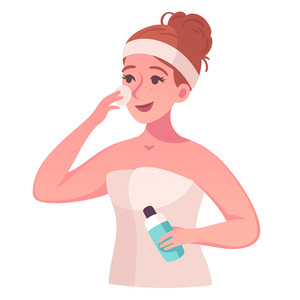

Are you unsure how to get started with taking better care of your skin and improve its overall appearance? Browse through this guide to learn more about how to start a skincare routine, skincare ingredients and more!
The very first step in anyone's skincare routine is to wash your face.
Washing your face with the appropriate cleanser is essential to lay the foundation for your other skincare steps to work correctly. The kind of cleanser you use will mainly depend on your skin type and skincare concerns. For example, foaming cleansers tend to dry out the skin more easily, so if you have dry skin it is best to avoid these and use an oil-based cleanser.
Using a toner after cleansing to rehydrate and create a base for future skincare products.
A toner is a liquid-based skincare product that is used directly after cleansing and drying the face. The purpose of this step is to prepare your face for the following products (or even makeup) you will be using and to remove any excess dirt, dust, or oil that remains on the skin.
The use of certain serums and essences will help aid your skin and target your specific skin concerns.
For this step, you can really get creative and find skincare supplements or products that work for you based off of ingredients and your personal skin concerns. Things like serums, essences, pimple patches, face masks, etc. are all used to treat differing skin concerns. These concerns range from wrinkles, redness, dry patches, acne, hyperpigmentation, and so many more. To understand what ingredients may be beneficial for your skin's needs, refer to the section below about different skincare ingredients!
Next, apply a moisturizer to lock in your other skincare products.
A crucial step in the skincare routine process is applying moisturizer. This is essential to keep the skin from drying up after cleansing and using other skincare products that could possibly dry the skin while working to solve other skin concerns. Moisturizers can be oil-based, which are better-suited for dry skin types, or water-based that are paired better with oily skin. Finding the right moisturizer to top off the rest of your skincare is key to replenishing and maintaining your skin.
To protect your skin from harmful UV rays, be sure to apply sunscreen.
Using a facial sunscreen has become a trending but important topic in the skincare industry in recent years. It is recommended that you use a face sunscreen with SPF 30 or more daily during your morning skincare routine, or at least SPF 50 when participating in outdoor activities for extended periods of time. Regularly using sunscreen on the face prevents future wrinkles from forming and diseases like skin cancer from developing over time.